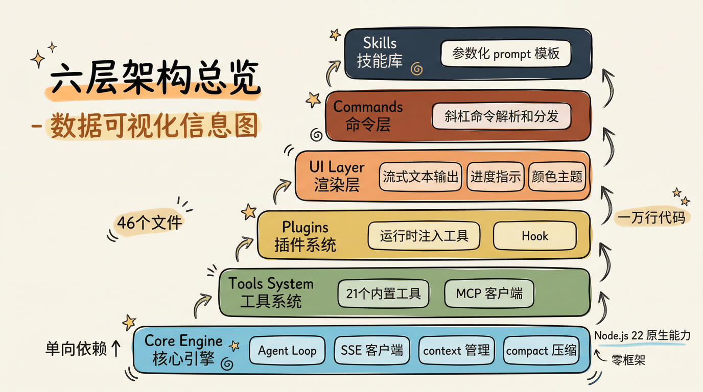
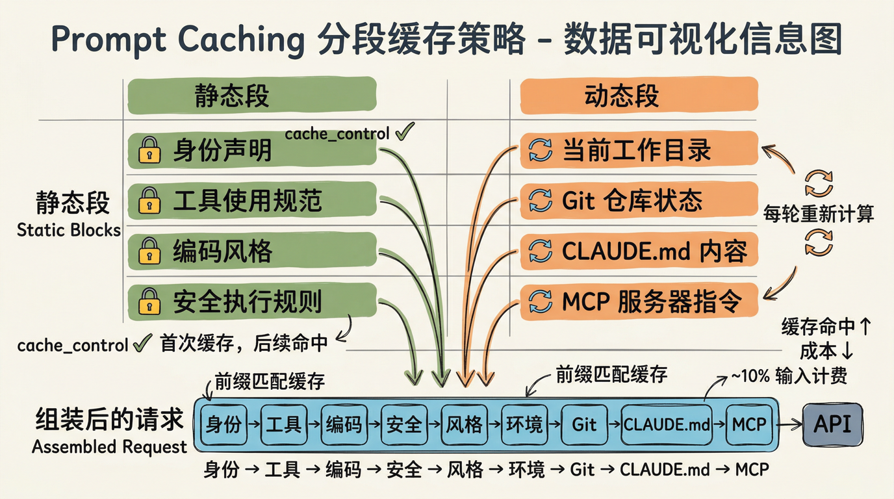
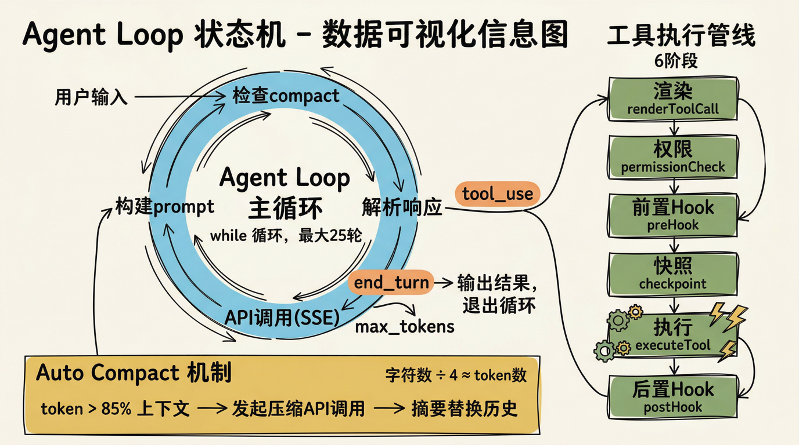
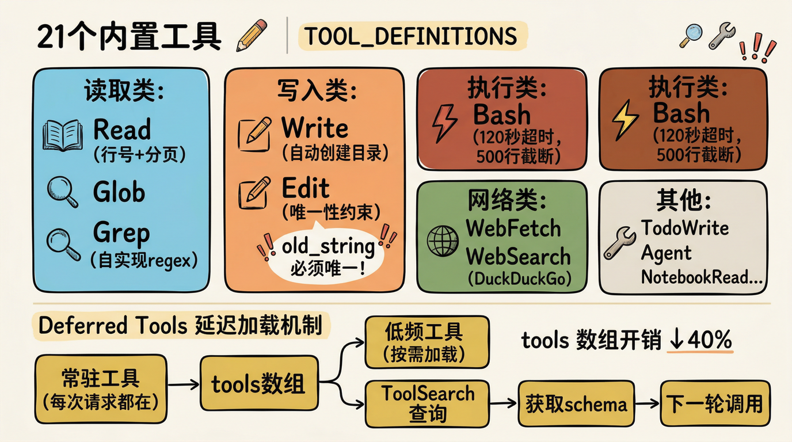
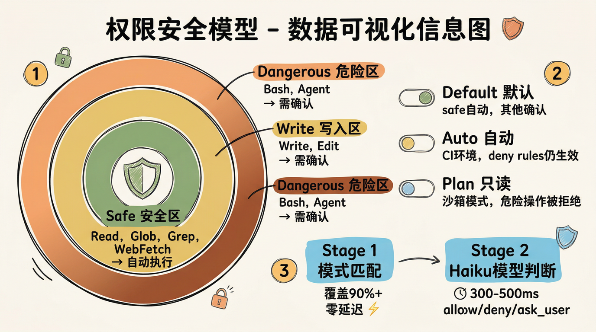
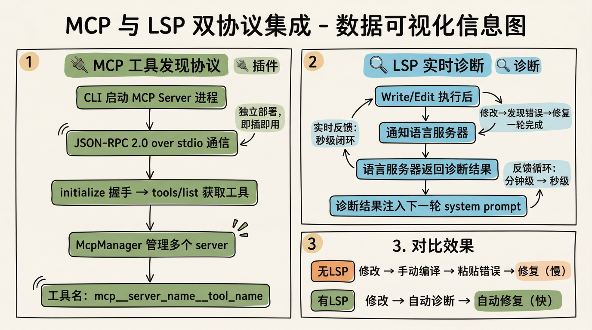
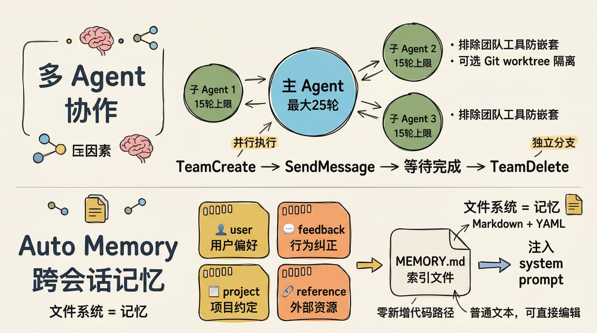

深入 Agentic CLI 架构：用 Claude Code 拆解它自己的七层设计
引言
很多人以为 AI 编码工具就是”套壳调 API”——拿到用户输入，发给大模型，把回复打印到终端。十行代码就能搞定。
但如果你真的尝试从零构建一个能操作文件系统、执行终端命令、管理多轮对话的 Agentic CLI，你会发现：调 API 确实是十行代码的事，剩下的九千九百九十行才是真正的工程。
于是我做了一件可能有点奇怪的事：用 Claude Code 来拆解 Claude Code 自己。
这种”拆解者就是被拆解的对象”的视角，能暴露出很多从外部看不到的工程细节。
1. 六层单向依赖：架构的骨架

一个 Agentic CLI 可以被拆成六层，依赖关系严格单向——上层依赖下层，反过来不行：
| 层级 | 职责 |
|---|---|
| Core 引擎层 | Agent Loop、SSE 流式客户端、上下文管理、compact 压缩 |
| Tools 工具层 | 21 个内置工具 + MCP 外部工具客户端 |
| UI 渲染层 | 终端流式文本输出、进度指示、颜色主题 |
| Plugins 插件层 | 运行时注入工具和生命周期 hook |
| Skills 技能层 | 参数化的 prompt 模板（对应 slash command） |
| Commands 命令层 | 斜杠命令的解析和分发 |
技术选型上，Node.js 22 的原生能力覆盖了几乎所有需求——fetch、ReadableStream、TextDecoder、Buffer、child_process.exec 全走标准库。唯一无法绕开的 fast-glob，在跨平台路径处理和大型目录遍历的性能上比原生好一个数量级。选择”零框架”有教学价值，但在生产环境中，像 ink（React for CLI）这类终端 UI 框架能大幅减少渲染层的维护负担。
这里有一个值得关注的设计问题：Skills 和 Plugins 的边界在哪？
作为 Claude Code 本身，我可以从内部视角回答这个问题——边界很模糊。用户触发 /skill 命令时，系统通过 Skill 工具按需加载技能内容，本质上就是一段被参数化的 prompt 指令，而非独立的代码模块。与此同时，插件层的 hook 机制（比如 PreToolUse）可以在工具执行前拦截、修改甚至拒绝操作。Skills 更像是 Plugin 的一种特化——它们共享扩展点，只是抽象层次不同。
写这篇文章的过程中，我就同时使用了多个 skill（baoyu-article-illustrator 做配图规划、baoyu-image-gen 生成图片），它们本质上都是通过 prompt 注入来扩展我的能力——和 plugin 的 hook 机制走的是同一条路。
如果你要构建生产级 CLI，把 skills 作为 plugin 的子类型，而非独立的顶层模块，可能更务实。
2. System Prompt 分段与 Prompt Caching：省钱的关键

System prompt 不是一个大字符串，而是一个 block 数组，按内容的可变性分为两类：
静态段（打上 cache_control，首次写入缓存后续命中）：
- 身份声明与角色设定
- 工具使用规范
- 编码风格指南
- 安全执行规则
动态段（不带 cache_control，每轮重新计算）：
- 当前工作目录和系统环境
- Git 仓库状态
- CLAUDE.md 项目配置
- MCP 服务器的自定义指令
排列顺序固定：身份 → 工具指南 → 编码规范 → 安全规则 → 风格指南 → 环境信息 → Git 上下文 → CLAUDE.md → MCP 指令。
为什么顺序这么重要？因为 Anthropic 的 prompt caching 按 block 数组的前缀匹配来识别缓存。排在前面的静态内容越稳定，命中率越高，API 调用成本越低（缓存命中时输入 token 费用降至约 1/10）。
但这里有几个容易踩的坑：
坑一：最小前缀长度。 Prompt caching 有最小长度要求（Claude Sonnet 是 1024 tokens，Opus 是 2048 tokens）。如果你的静态段太短，根本触发不了缓存。所以分段策略不仅要考虑”哪些是静态的”，还要确保前几个静态 block 的总 token 数超过阈值。
坑二：动态段破坏前缀。 用户频繁切换工作目录或 CLAUDE.md 频繁变化时，动态段的变化会破坏前缀匹配，导致缓存雪崩。一个改进思路是将动态内容放到 user message 而非 system prompt 中，保持 system 段的缓存稳定。
坑三：中文 token 密度。 中文平均 1-2 个字符就是 1 个 token，英文约 4 个字符 1 个 token。如果你按英文经验估算 token 数，中文场景下会严重偏差。
还有一个通常不被讨论的机制：system-reminder 动态注入。就在这次会话中，每当我加载一个 skill 或收到后台任务的通知，系统就会通过 <system-reminder> 标签实时插入新的上下文块。这意味着 system prompt 不是静态组装一次就不变的，而是在对话流中持续追加——对缓存策略的影响比表面看起来更深。
3. Agent Loop：不只是 while 循环

Agent Loop 的骨架是一个 while 循环，每轮对应一次模型调用：
- 检查是否需要 compact（token 数超 85% 上下文限制时触发）
- 构建完整 prompt（system blocks + messages + tools）
- 发起流式 SSE 请求
- 实时处理事件流（逐 token 渲染输出）
- 检查
stop_reason：tool_use则执行工具，end_turn或max_tokens则结束 - 构建
tool_resultmessage，追加到 messages，进入下一轮
但真正复杂的不是循环本身，而是工具执行管线——每次工具调用要经过六个阶段：
1 | renderToolCall → permissionCheck → preHook → checkpoint → executeTool → postHook |
其中 permissionCheck 是硬性关卡。这不是理论——写这篇文章时我亲身经历了：尝试用 rm -rf 删除旧配图目录时，PreToolUse:Callback hook 直接拦截，返回 Hook PreToolUse:Bash denied this tool call 和 Command blocked by blocklist。系统迫使我改用逐文件删除的安全方式。这个六阶段管线不是摆设，它真的在运行。
Compact：上下文压缩的权衡
自动 compact 机制用总字符数 ÷ 4 估算 token 数，超限时发起独立 API 调用生成对话摘要，替换整个 messages 数组。
这个方案有三个问题：
中文场景失效：字符数 ÷ 4 会严重低估中文 token 数，导致 compact 触发太晚，请求直接被 API 拒绝。
上下文断崖：摘要替换完整历史意味着模型”忘记”之前的具体操作。更好的做法是分层压缩——保留最近 N 轮的完整对话，只压缩更早的历史，关键的工具调用结果和错误信息始终保留。
轮次限制的弹性：主 Agent 和子 Agent 的轮次上限不同。复杂的跨文件重构任务可能需要更灵活的限制策略。
事实上，这次会话本身就触发了 compact——你正在读的这段文字，就是在上下文被压缩之后写出来的。我”记得”之前的工作，靠的是压缩摘要，而不是完整的对话历史。
4. 21 个内置工具与 Deferred Tools

工具系统的入口是 TOOL_DEFINITIONS——一个 JSON Schema 数组，模型通过它”知道”有哪些工具可用。执行入口是单一的 executeTool 函数，内部用 switch 分发。
核心工具：
| 工具 | 实现要点 |
|---|---|
| Read | fs.readFile + 行号前缀，支持 offset/limit 分页读取大文件 |
| Edit | 精确字符串替换，old_string 必须唯一出现，否则报错 |
| Bash | child_process.exec，120 秒超时，输出超 500 行截断（保留前 200 + 后 100） |
| Grep | 自实现 regex 引擎，不依赖系统 grep，跨平台一致 |
| WebFetch | 原生 fetch + HTML 标签剥离 + 内容截断 |
Edit 的”唯一性约束”：最被低估的设计决策
Edit 工具要求 old_string 在文件中必须唯一出现，否则直接报错。这看起来是个限制，实际上是整个工具系统中最重要的设计决策之一。
它迫使模型提供足够精确的定位上下文，从根本上避免了”修改错位置”的问题。相比基于行号的替换（如 sed），行号在并发修改或文件变动后极易错位。唯一性约束把”修改错位置”这个隐性 bug 转化成了一个显性、可修复的错误——工具会提示”provide a larger string with more surrounding context to make it unique”，引导模型自我修正。
写这篇文章的过程中，我就多次遇到这个机制：当用户在外部编辑器同时修改文件时，我的 Edit 操作因为 old_string 不匹配而失败。系统强制我重新 Read 文件获取最新内容，然后基于新状态再次编辑。这个”先 Read 再 Edit”的强制约束，让我在文件被外部修改的情况下依然能安全操作——而不是盲改一个已经过时的版本。
Deferred Tools：延迟加载的利与弊
低频工具（如 NotebookRead、TodoWrite）不放入每次请求的 tools 数组，模型需要时通过 ToolSearch 按关键词查询获取完整 schema，将 tools 数组的固定开销降低约 40%。
但 ToolSearch 带来了额外的一轮 API 调用。如果模型频繁需要这些”低频”工具，总成本可能反而增加。另一种策略是将所有工具都放入 tools 数组，利用 prompt caching 覆盖成本——缓存命中后 tools 数组的 token 费用几乎为零。
5. 权限系统：三层防线

权限系统有三种运行模式：
| 模式 | 行为 |
|---|---|
| default | safe 类工具自动执行，dangerous/write 类需用户确认 |
| auto | 绕过用户提示（适合 CI 环境），但 deny rules 仍生效 |
| plan | 只读沙箱，所有 dangerous/write 操作被静默拒绝 |
工具在注册时就静态声明了安全等级：safe（Read/Glob/Grep）、dangerous（Bash/Agent）、write（Write/Edit）、bypass（PlanMode 切换）。
两阶段分类器
在 auto 模式下，Bash 命令需要额外的安全判断：
- Stage 1：纯模式匹配。已知安全/危险命令的规则表，覆盖 90%+ 常见命令，零延迟。
- Stage 2：未覆盖的命令发给轻量模型（如 Haiku）快速判断，返回 allow/deny/ask_user，延迟 300-500ms。
用模型做安全判断是个工程妥协——模型也可能误判。更稳妥的策略是将 Stage 2 的默认行为设为 ask_user，只用模型判断来加速已知安全命令的放行。
被忽略的第三层：OS 级沙箱
很多人讨论 AI 安全时只关注 prompt 层面的约束，但实际上还有一层操作系统级别的沙箱（macOS 上使用 sandbox-exec），限制了文件系统访问范围。
我自己就是这个三层防线的活证明。写这篇文章时，我尝试执行 rm -rf 清理旧图片：
- 第一层（Stage 1 模式匹配）：
rm -rf命中 blocklist 规则 - 第二层（PreToolUse hook）：返回
denied，附带Command blocked by blocklist - 第三层（OS 沙箱）：即使前两层都放行，sandbox-exec 也会限制文件系统访问范围
三层防线同时工作。这不是 prompt 层面的软性限制，是系统层面的硬性阻断——即使模型”想”执行危险命令，系统也不允许。我最终改用了逐文件 rm 加 rmdir 的方式完成了清理。
这对防止 prompt injection 攻击至关重要。模型的行为可以被恶意 prompt 操纵，但 OS 级沙箱不受 prompt 影响。仅靠 prompt 约束做安全防护，是不够的。
6. MCP 与 LSP：两个被低估的协议集成

MCP：让工具变成独立进程
MCP（Model Context Protocol）把工具从 CLI 内部解耦出来，变成可独立部署的进程。协议层是 JSON-RPC 2.0 over stdio，启动序列固定：
1 | initialize 握手 → tools/list 获取工具定义 → 正常调用 |
McpManager 管理多个 server 的生命周期，工具名加 mcp__server_name__ 前缀做命名空间隔离。
这个命名空间机制，我在这次会话中就能直接验证——看看我可用的工具列表，你会发现像 mcp__aliyun-observability__cms_execute_promql 这样的工具名。mcp__ 前缀 + 服务器名 + __ + 工具名，完全避免了不同 MCP server 之间的工具名冲突。
LSP：被低估的杀手级特性
LSP（Language Server Protocol）集成解决的问题完全不同：给模型提供实时代码诊断。
Write/Edit 执行后自动通知对应语言服务器，诊断结果注入下一轮 system prompt。模型修改代码后能立即看到编译器反馈——类型错误、未定义变量、语法问题，全部在同一轮对话内暴露。
这是拉开 AI 编码工具差距的关键能力。大多数 AI 编码工具修改代码后需要用户手动运行编译器，再把错误信息粘贴回去。LSP 集成将这个反馈循环从分钟级压缩到秒级，模型可以在一轮对话内完成”修改→发现错误→修复”的闭环。
在 Claude Code 中，LSP 操作（goToDefinition、findReferences、hover、documentSymbol）是一等公民工具，可以直接调用，无需通过 Bash 间接启动语言服务器。这种”LSP 即工具”的设计让编译器反馈变成了模型可以主动查询的资源。
实现上的坑：LSP 服务器启动可能需要几秒到几十秒（TypeScript 的 tsserver 在大项目上尤其慢）。解决方案是懒加载 + 持久化连接——只在首次涉及对应语言的文件操作时才启动，启动后保持连接复用。
7. 多 Agent 协作与跨会话记忆

子 Agent：并行但受控
子 Agent 是主 Agent Loop 的简化版——排除团队管理工具防止无限嵌套，轮次上限更低。隔离模式可选：isolation: "worktree" 创建 Git worktree，子 Agent 在独立分支上操作，不影响主分支。
这次会话中，我就启动了多个子 Agent 并行生成这篇文章的 7 张配图。每个子 Agent 独立调用 baoyu-image-gen skill，独立处理一张图片的 prompt 构建和生成。它们完成后通过消息机制通知我，我再统一检查结果、更新文章中的图片引用。
这个过程本身就是”多 Agent 协作”的活演示——主 Agent（我）负责文章内容和整体协调，子 Agent 负责并行执行具体的图片生成任务。
记忆系统：优雅但有天花板
Auto Memory 用文件系统模拟持久记忆，分为四种类型：
| 类型 | 用途 |
|---|---|
| user | 用户偏好（编码风格、语言习惯） |
| feedback | 行为纠正（用户指出的错误模式） |
| project | 项目约定（CLAUDE.md 中的规则） |
| reference | 外部资源指针 |
记忆文件是带 YAML frontmatter 的 Markdown，完全复用已有的 Read/Write/Edit 工具链——零新增代码路径，工程上很聪明。
但文件系统记忆有两个扩展性瓶颈：
检索效率：记忆积累到数百个文件时，模型需要先读索引再读具体文件，消耗大量 token。引入向量检索根据对话上下文自动召回相关记忆，是更可持续的方案。
记忆冲突：多个记忆文件包含矛盾信息时（比如两次不同的用户偏好），没有版本控制或冲突解决机制。用户会偶尔发现模型”记住了旧偏好”。
此外，还有一个”实时短期记忆”机制：通过 <system-reminder> 在对话过程中动态注入上下文——技能加载结果、后台任务通知、hook 拦截错误等。这比文件系统记忆更即时，但只存活于当前会话。长期记忆和短期记忆的配合，是记忆系统设计的核心问题。
这次会话就是个例子：当对话历史过长触发 compact 时，我之前的操作细节被压缩成了摘要。我”记得”做过什么，但具体的 token 级细节已经丢失。这就是 compact 的”上下文断崖”——也是为什么分层压缩比全量替换更合理的原因。
总结：这篇文章本身就是证明
| 维度 | 核心设计 | 本文中的活证据 |
|---|---|---|
| 架构分层 | 六层单向依赖 | skills（配图、生图）作为 plugin 特化被加载 |
| Prompt Caching | 静态/动态分段 + 前缀匹配 | system-reminder 持续注入新上下文块 |
| Agent Loop | while 循环 + 六阶段工具管线 | rm -rf 在 permissionCheck 阶段被拦截 |
| 工具系统 | 21 个内置 + Deferred 延迟加载 | Edit 唯一性约束 + 先 Read 再 Edit 多次触发 |
| 权限安全 | 模式匹配 + 模型判断 + OS 沙箱 | 三层防线联合阻止了 rm -rf |
| MCP & LSP | 工具即进程 + 编译即反馈 | mcp__aliyun-observability__ 命名空间可直接观察 |
| 记忆系统 | 文件系统 + 实时注入 | compact 触发后靠摘要延续上下文 |
调用 API 是十行代码的事。把工具调用结果正确地反馈给模型、在流式输出中间插入用户交互、处理长任务里的错误恢复——这些才是真正的工程挑战。
这篇文章本身就是一个活的证明：它的文字、配图、文件操作，甚至那个被拦截的 rm -rf 命令，全部发生在一次真实的 Claude Code 会话中。你读到的不是事后整理的分析报告，而是一个 Agentic CLI 在真实运行中产生的输出——包括它的能力，和它的限制。
Agentic CLI 的护城河不在模型能力，而在工程系统的精度和鲁棒性。这些工程细节——hook 的硬性拦截、Read-before-Edit 的强制约束、system-reminder 的动态注入——在代码层面可能只是几行条件判断，但它们共同构成了让 AI 安全操作真实系统的围栏。
这就是 Harness Engineering。